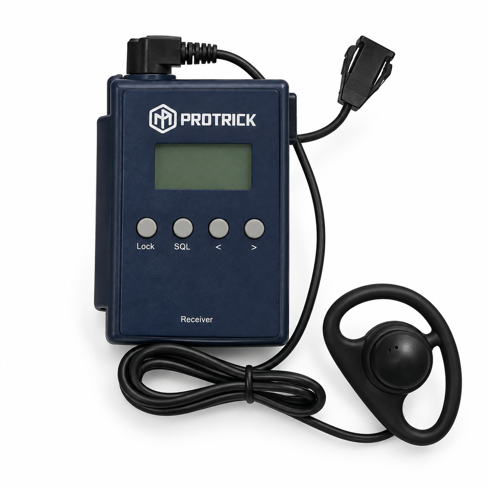
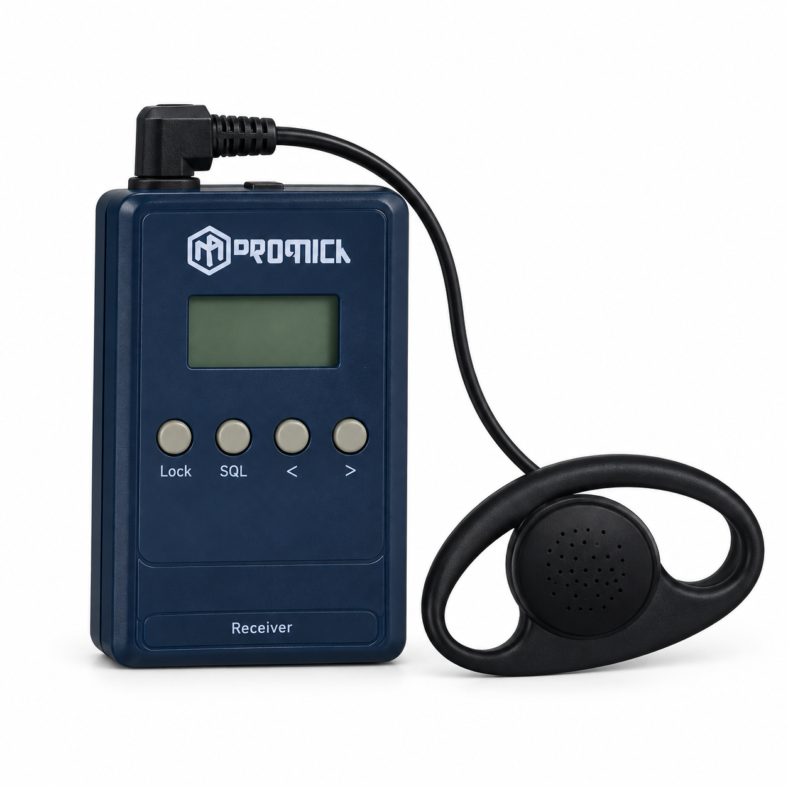
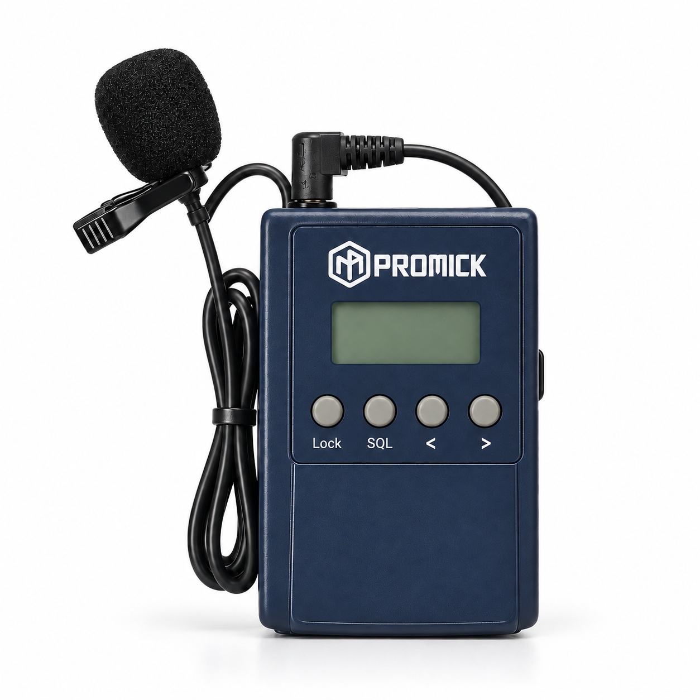

低遅延の音声
同時通訳では、音声の遅れが参加者を話し手から引き離し、集中を妨げます。低遅延の伝送により、通訳音声を発話に合わせて届け、自然な聞き取りと文脈の理解を支えます。
プロフェッショナルな同時通訳システム。会議、セミナー、カンファレンスに対応します。
明瞭なコミュニケーションのために
通訳のプロフェッショナルが信頼して使用する機材です。参加者が会話の内容に集中できるよう設計されています。
同時通訳では、音声の遅れが参加者を話し手から引き離し、集中を妨げます。低遅延の伝送により、通訳音声を発話に合わせて届け、自然な聞き取りと文脈の理解を支えます。
デジタル信号により、会場周辺の無線周波数との混信や音声漏れを抑え、音声チャンネルを安定して保護します。
手に収まりやすく、ポケットに入れたり首から下げたりしやすいコンパクトな設計です。参加者の移動を妨げず、快適にご利用いただけます。
シンプルな操作で、参加者は複雑な設定なしに指定された音声チャンネルへすぐ接続できます。



イベントの準備に
参加者用イヤーピースと通訳者用クリップマイクを用途に合わせてご用意します。会場規模に応じた必要台数の確認から運用準備まで、弊社チームが対応します。
レンタル料金
IDR 130.000 / 1台、1イベントまたは1日あたり